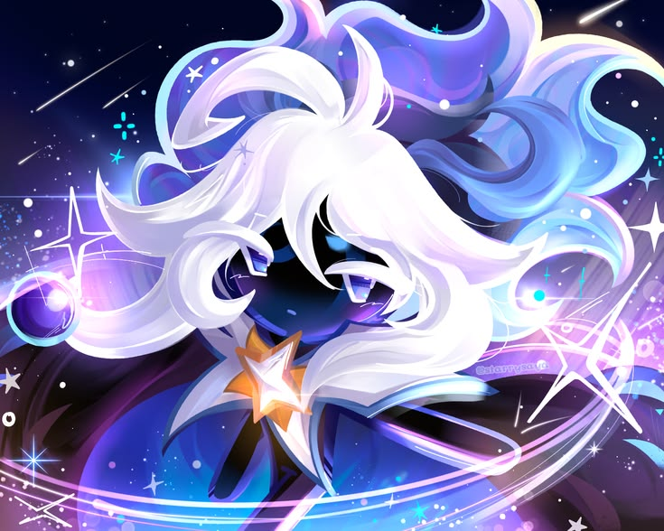
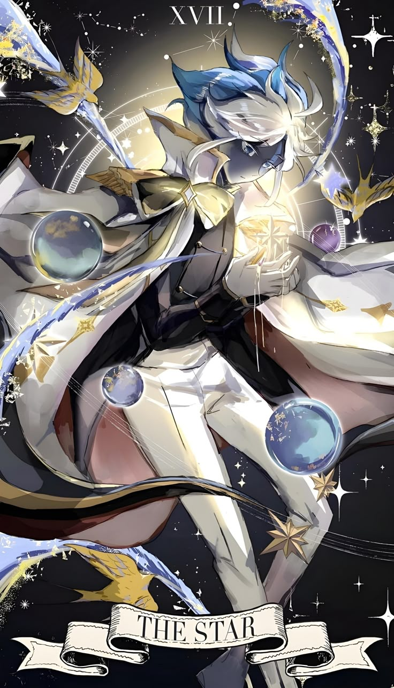
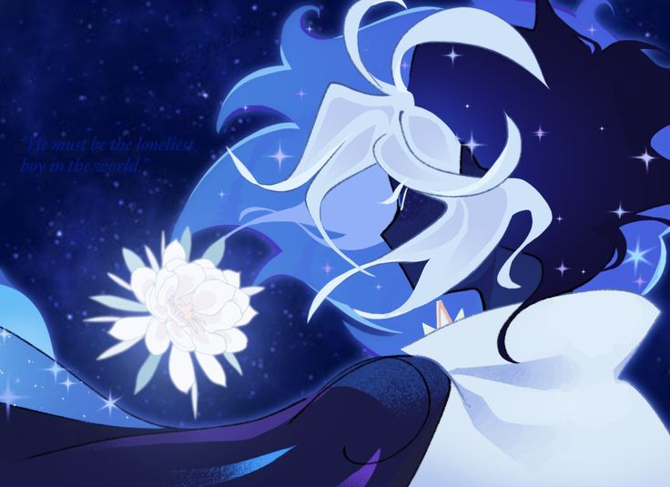
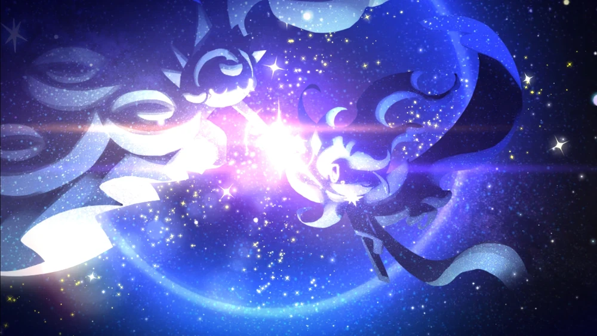
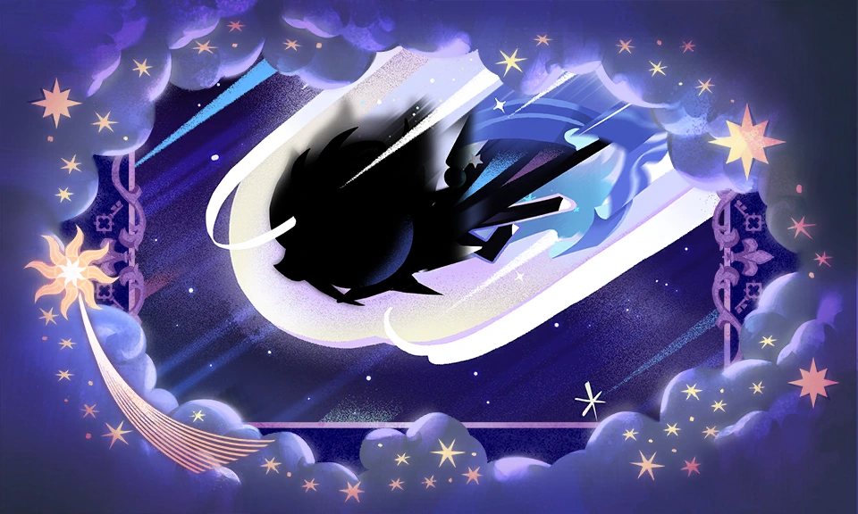
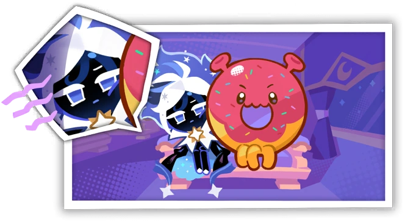

STARDUST COOKIE
< Traveler of The Universe & Fiery Star's Wrath >
It is hard to say how long the lonesome speck of Cookie dough had been drifting in the vast emptiness of space before the radiance of nameless stars blessed it with the gift of life. Was it a mere coincidence...? For Stardust Cookie, the warmth of many suns was the heat of the oven, and the distant planets were his only companions in his light-speed journey across galaxies. Beckoned by shapeless, fleeting nebulae, guided by the whispering of the stars, Stardust Cookie headed to the City of Wizards to uncover the secret of his birth. Was he trying to find his long-lost purpose, or, on the contrary, escape his predetermined fate...? With a glint of a stray shooting star, this lonesome voyager crosses someone's sky tonight, seeking a place to call home.
COOKIE SPECIFICATIONS
| Parameter | Value |
|---|---|
| Rarity Tier | ★★★★ Super Epic |
| Type | Ambush |
| Position | Middle |
| Gender / Pronouns | Male (He/Him) |
| Age | Immortal Adult |
| Cookie Traits | Flying & Mysterious |
Stardust Cookie is a Cookie born from "imperfect" dough imbued with nameless starlight, an unforeseen byproduct of Moonlight Cookie's flawless, moonlight-infused dough that the Wizards discarded into space. Baked by the light of the stars, he travels across the cosmos in search of his origins and a place to call home.
Stardust Cookie soars in the sky and marks the enemy with the highest ATK (targets Cookies first) with the Sign of the Stars. Then he will descend to deal area damage to the enemies, amplifying debuffs they receive. Targets will receive additional damage depending on the number of buffs they currently have.
CHARACTER ATTRIBUTES & HEADCANON

Nebula Cloak & Starlight HairStardust Cookie is a slim Cookie of average height. His dough is a deep obsidian with swirls of navy and he has cerulean eyes with long, white lashes. His translucent hair that resembles a comet's tail is mainly light purple, with dark purple in the middle. He has white bangs and two indigo swirl markings on his forehead. His shoes are white and he wears a flowing blue-black cape with indigo lining, which is cyan and sparkly underneath. Each end of his cape has a white star decoration on it. The bottom of his cape is decorated with a thick dark blue ribbon. His spiky white collar has a gold star in the middle.
Signature Quote
"Will I, too, find a star to call my own?"— Stardust, Fiery Star
What if He Joined Extracurricular:

Because of his history as an unwanted failure in the Wizards' eyes, an unknown grief and sorrow consumed Stardust Cookie for much of his time as he traveled the stars.
Only after coming to terms with his creation did he give up his fury, choosing instead to find further meaning by traveling across space. Now, he is a wistful, philosophical, and low-key soul who only wishes to comprehend the depth of the world around him.
Stardust Cookie primarily understands the cosmos, seeing stars as kindred souls that always keep him company. He does not understand Earthbread-bound concepts such as interpersonal relationships or even food, and has thus only cautiously begun to explore these things for himself.
CHRONICLES & BACKGROUND LORE
Eternal City of Wizards

In an attempt to create the Perfect Cookie, the Wizards chose only the dough imbued with the purest moonlight, discarding impure dough into space. This discarded dough eventually gathered in the starlight until it reached the Sugar Swan Constellation, where it had gained a Cookie's consciousness. As time passed by, stardust completed its form, and the sun heated the dough, baking Stardust Cookie. Although he first thought that his birth was nothing more than a coincidence, the stars told him that the origin of his dough could be traced back to the City of Wizards, where he felt a calling to return to.
Crunchy Dreams

In the World of Dreams, Stardust Cookie asked Moonlight Cookie about how Cookies traveled through dreams. Moonlight Cookie then asked her brother why he was curious, to which Stardust Cookie admitted that he once had a dream about either a star or a Cookie wandering the Universe, remembering for certain only a sense of longing that caused his chest to ache whenever he thought about it. Realizing that the feeling had only strengthened ever since his arrival at the City of Wizards, he then asked Moonlight Cookie if it was possible to find this dream within her realm. Moonlight Cookie then falls asleep to locate the dream, causing Stardust Cookie to fall asleep as well.
Stardust Cookie's Space Travels

Stardust Cookie comes aboard Milky Way Cookie's train to go on a journey, learning how to interact with others and open Starflour Crisp packets. He finds himself having to sit next to a peculiar creature known as the Space Doughnut. Although he initially finds himself frustrated with his inability to understand the creature and its mannerisms, its friendly behavior eventually sways him over.
TRANSMISSION CHANNEL
Send Stardust Cookie Message

Send your message across the stars and let Stardust Cookie receive your signal from the Eternal City of Wizards. He want your cosmic thoughts, questions, or greetings! Fill out the form below and your transmission will be sent into the vastness of space.